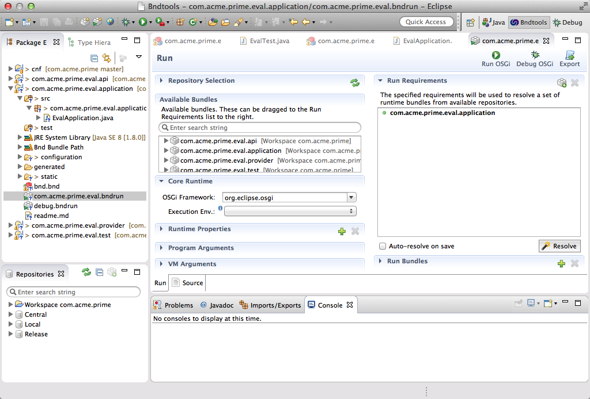
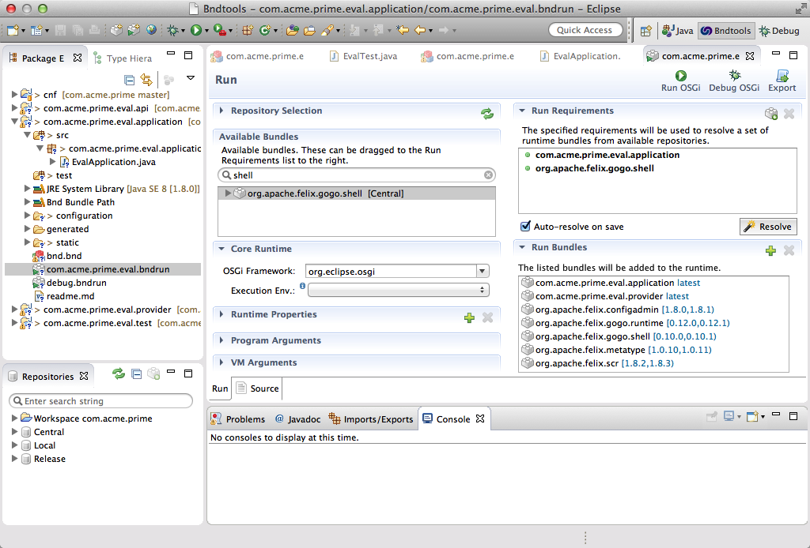
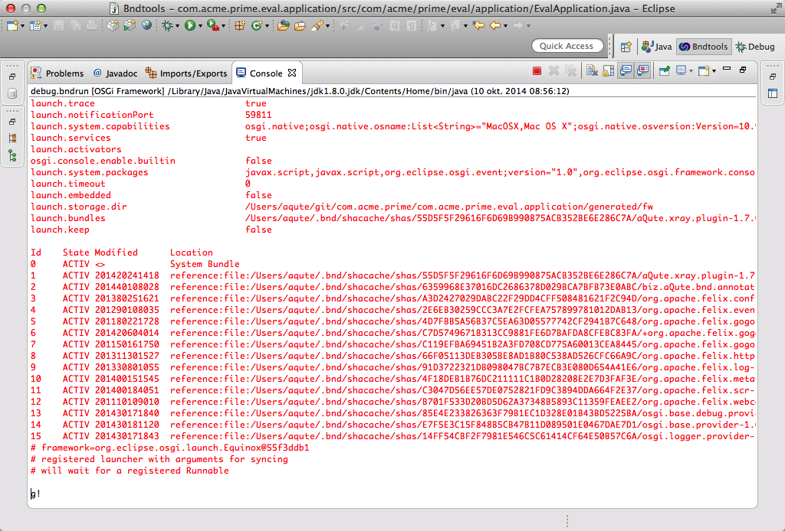
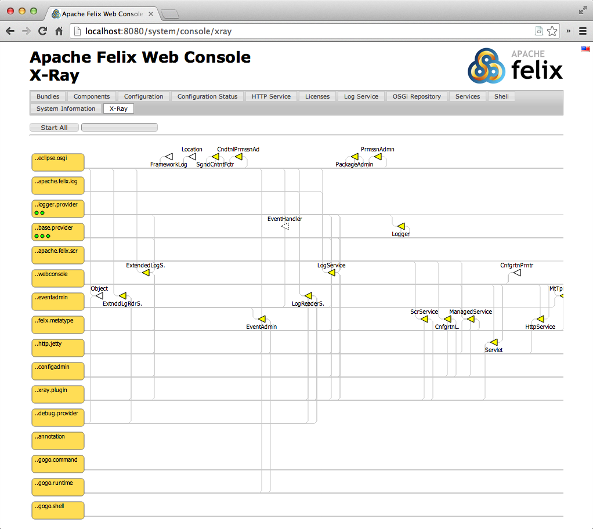
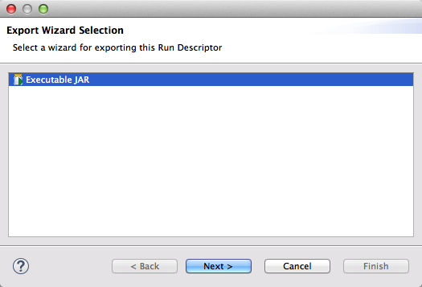
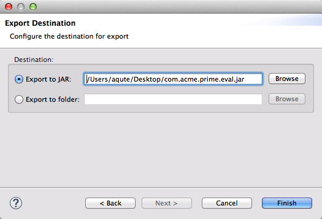

Deploying an Application
What You Will Learn in This Section
All this work to get a working provider! However, we’ve only run it in a evaluation and test mode. In this section we will take a look how we can use this provider bundle in an application we can deploy.
There are a myriad of deploy formats in Java (and OSGi!): WAR files, Karaf KARs, EAR files, OSGi Subsystems, OSGi Deployment Admin, etc. Bndtools can support all of those through plugins but always natively supports the most humblest of all deployment formats: an executable JAR. An executable JAR has no external dependencies, everything it needs outside the JDK is embedded.
The beauty of an executable JAR is that it can be started anywhere there is a java virtual machine:
$ java -jar executable.jar
Creating an Application
The first thing we need to do is create a bndrun file. Don’t confuse a bndrun file with the Run tab of the bnd.bnd file. These are two distinct files. A bndrun file allows us to specify a runtime for our framework.
So do a New/Bndtools/Bnd OSGi Project and use com.acme.prime.eval.application as the project name. The .application extension for this project creates an application project. Don’t forget to use the OSGi enRoute template!
An application project should contain no code (or very little) but acts as a spear point. It contains the requirements that will drive the final application.
The Sole Content
By default, an application only contains a Gogo shell command, in this case in the EvalApplication class. This one is very similar, and then not really, to the EvalImpl class. In the EvalImpl class we just made the existing API call, eval, available as a Gogo command. In this application project we need to get the service and call the method on that service. Getting a service is made very easy with DS, just add a setter method and add the @Reference annotation. So lets replace the code for the EvalApplication code with:
@Component(
service=EvalApplication.class,
property = {
Debug.COMMAND_SCOPE + "=eval",
Debug.COMMAND_FUNCTION + "=eval"
},
name="com.acme.prime.eval"
)
public class EvalApplication {
private Eval eval;
public double eval(String m) throws Exception {
return eval.eval(m);
}
@Reference
void setEval( Eval eval) {
this.eval= eval;
}
}
This code registers a dummy service that now provides the eval:eval command to Gogo shell (notice the imaginative difference between the test:eval command we created in the provider.
Just like the test project, we need to add a dependency on the API project. As usual, go to the Build tab of the bnd.bnd file and add the com.acme.prime.eval.api project.
Defining the Application
We will define the run time requirements in a special file, a bndrun file. Such a file is already placed in the application project: com.acme.prime.eval.bndrun. Such a bndrun file is basically the information we have been working with in the bnd.bnd Run tab. If you double click on it, then it should look like:

As you can see, the initial requirement for our Gogo command is already there. Before we try it out, let’s add a shell (org.apache.felix.gogo.shell) so it is slightly more interactive. That’s it! Hit the Resolve button and save the bndrun file.

At the right top of the bndrun’s Run tab there are a number of buttons:
If you click the Debug OSGi button then bnd will launch a framework and run your application.
Since we have a shell, we can try out the command:
g! eval:eval pi*13.36901521971921
42.0
And it took considerably less time than 7.5 million years!
Debugging
Let’s first kill this framework so we can start another framework that is friendlier on the debugging side. Just click on the red button in the Eclipse console.
The application project also includes a debug.bndrun file. This is also a bndrun file but it adds debug requirements. So quit the running framework (Go to the console, and click on the red button) and double click the debug.bndrun file, resolve, and click Debug OSGi.
The first thing you’ll notice is how the console is filled with red text. This is the trace output of the launcher. If things do not really work as you expected (never happens to us …) then this output, which traces the installation process in fine detail, can help you solve the problems. This behavior is triggered by the -runtrace flag. Click on the bnd.bnd Source tab, and change it to false or remove it if you do not want this trace.

The debug.bndrun file inherits from the com.acme.prime.eval.bndrun file, any initial requirement we add to this file is automatically added to the debug run; first principle of Don’t Repeat Yourself (DRY). However, the debug.bndrun adds a set of standard requirements that make it so much easier to debug OSGi applications. It adds Web Console, the Gogo shell, etc. So click on the Debug OSGi button and then go to http://localhost:8080/system/console/xray to inspect your OSGi system. The user id and password were admin, and … drumroll … admin.

XRay and its associated tools were explained in the debug section.
Exporting
This was fun, ok, at least not bad. But how do we deploy this? How do we get this running on our target environment? Well, we can make this into an application, an executable JAR file.
We start by double clicking the com.acme.prime.eval.bndrun file and selecting the Run tab. Remember where we found the Debug OSGi button, on the right top of the bndrun Run tab. A little bit more to the right you find an Export button.
Clicking the Export button shows you a dialog that asks you where to store the exeecutable JAR on the file system:

Select the Executable JAR, and save this on your desktop under the name com.acme.prime.jar.

This JAR is quite wondrous: it has no external dependencies. To execute it, you should open a shell on your desktop:
$ java -version
java version "1.8.0"
Java(TM) SE Runtime Environment (build 1.8.0-xxx)
Java HotSpot(TM) 64-Bit Server VM (build xxxx, mixed mode)
$ java -jar com.acme.prime.jar
____________________________
Welcome to Apache Felix Gogo
g! eval:eval 3+4+5+6+7+8+9
42.0
Isn’t there more in the universe? It does makes you wonder that so many sums have this answer?
Anyway, when you had enough math you can quit this app by hitting control-c.
How Does it Work?
bndrun files define the requirements on a desired runtime. When the Resolve button is hit, the bnd resolver looks at the initial requirements and will try to find resources in the repositories that together match those requirements and the requirements from the introduced resources. The resulting set of bundles defines a runtime, these bundles are set in the -runbundles instruction.
A runtime environment can then be executed to verify it, potentially resulting in some modifications. If the result is ok, then the export function of bnd is used.
The bnd export goes through a plugin; this is the same plugin that manages the launching. In this case this is the default aQute.launch plugin. The plugin takes the runtime environment and creates a JAR that contains all the dependencies, including itself and any properties; creating a JAR that is completely self contained.